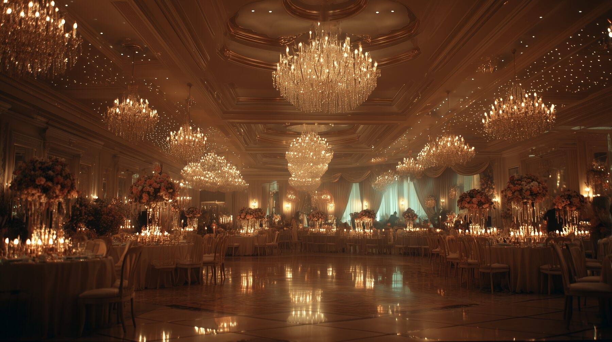

Tampa Bay · Est. 1999
Krewe History
The story of Tampa's original kilted krewe.
How It All Began
Tampa Bay, 1999
Founding
A Krewe Is Born
Tampa Bay, 1999

The Krewe of Shamrock was born in 1999 from a simple but irresistible idea: bring the spirit of Irish heritage, the skirl of the pipes, and the warmth of good craic to the streets of Tampa Bay. A small band of friends who loved Ireland — or simply loved a good parade — came together with kilts pressed, beads at the ready, and a motto that said everything: "All for Fun, Fun for All."
From that first St. Patrick's season, the krewe found its footing quickly. Tampa Bay, a city already steeped in the colour and pageantry of Mardi Gras krewes, welcomed a new tradition with open arms. The green and gold flags flew, the pipes played, and a new chapter of the city's celebration calendar was written.
Identity
Tampa's Original Kilted Krewe
Who we are

The Krewe of Shamrock holds a proud distinction: Tampa Bay's original kilted krewe. Long before Celtic heritage became fashionable at festivals and fairs, this krewe was marching in tartan, pipes calling across Bayshore Boulevard, drawing crowds who came for the green and stayed for the craic.
The kilt is more than a costume here — it's a statement of belonging. Whether members trace their roots to Cork or Kilkenny, or simply feel that pull toward something older and wilder, the tartan is a common thread. Each parade season, the krewe turns out in force: kilts swinging, beads flying, and the pipes raising that unmistakable sound that stops a crowd in its tracks.
Community
Growing Roots in Tampa Bay
A community takes shape

What began as a circle of friends quickly grew into a proper community. Year after year, new faces arrived — drawn by a friend's invitation, a parade float sighting, or simply a curiosity about those laughing people in kilts. The Krewe became known not just for its St. Patrick's Day presence, but for its year-round warmth: socials, fundraisers, and the kind of gatherings where strangers leave as friends.
The secret, members will tell you, is the welcome. "New faces," goes the saying, "are simply old friends we haven't met yet." That spirit — generous, inclusive, and genuinely joyful — has been the krewe's greatest inheritance, passed hand to hand from the founding members to every newcomer who walks through the door.
Tradition
The Parade Tradition
Green flags & good craic on the streets of Tampa

The annual St. Patrick's Day parade season is the heartbeat of the krewe's calendar. For over two decades, the Krewe of Shamrock has turned out to march through Tampa Bay's streets — kilts pressed, beads loaded, pipes tuned — turning an ordinary March morning into something people talk about for weeks.
The parade route becomes a ribbon of green and gold. Children dash for beads thrown from the ranks; families stake their curbside spots hours early; and the roar of the crowd as the pipes strike up never gets old, no matter how many seasons a member has marched. It is, every time, a little bit magical.
Beyond the main parade, the krewe has built a rich calendar of events — Tartan Balls, socials, volunteer days, and seasonal gatherings — that keep the community alive and thriving through every month of the year.
Service
More Than a Party — A Force for Good
Giving back to Tampa Bay

From its earliest days, the Krewe of Shamrock understood that the best parties also do some good. Service and charity became woven into the krewe's identity alongside the parades and the music. Over the years, members have donated thousands of dollars and countless volunteer hours to the Tampa Bay community — unloading delivery trucks for families in need, supporting children fighting serious illness, and lending strong hands wherever they are needed.
It's quiet work, mostly. No cameras, no fanfare — just krewe members rolling up their sleeves because it's the right thing to do. That commitment to service is, in many ways, the truest expression of the krewe's Irish spirit: generous, community-minded, and never asking for the credit.
Celebration
The Tartan Ball
An evening of elegance & tradition

If the parade is the krewe's heartbeat, the Tartan Ball is its soul. Each year, members and their guests dress in their finest — kilts and gowns, tartans and tiaras — and gather for an evening of dinner, dancing, and the kind of formal revelry that would feel at home in any great hall of old Ireland.
The Ball celebrates everything the krewe holds dear: beauty, tradition, fellowship, and the sheer joy of a good céilí. Pipers play, toasts are raised, and the dancefloor fills with couples who have marched together in parades, volunteered side by side, and now share this finer evening together. It is, by every measure, one of Tampa Bay's most beloved annual traditions.
Legacy
Twenty-Five Years & Counting
The road ahead

More than twenty-five years after that first parade season, the Krewe of Shamrock shows no signs of slowing. New members join every year, bringing fresh energy and enthusiasm to a krewe that has never lost its founding spirit. The pipes still play, the kilts still swing, and the motto still rings true: "All for Fun, Fun for All."
The krewe's story is, at its heart, a Tampa Bay story — a city that embraces its traditions, celebrates its communities, and always has room for one more face at the table. The Krewe of Shamrock carries that spirit forward, year after year, with green flags flying and the craic flowing freely.
Céad Míle Fáilte — a hundred thousand welcomes. Come march with us.
Become Part of the Story
New faces are always welcome